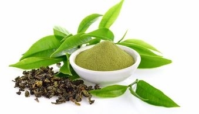
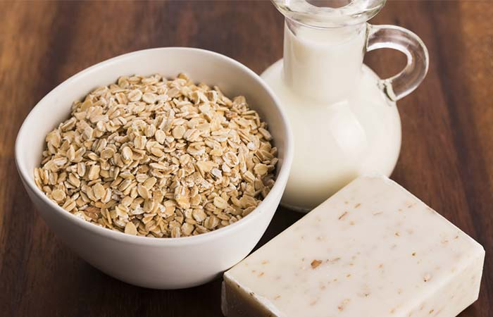

Coconut Oil

The anti-inflammatory and antiseptic activities of coconut oil can speed up the healing of burn wounds and may also help soothe sunburns
You Will Need
Virgin coconut oil (as required)
What You Have To Do
- Take some virgin coconut oil in your palms and apply it directly to the sunburned skin.
- Leave it on until it dries completely.
How Often You Should Do This
You may do this multiple times daily.
Essential Oils
a. Chamomile Oil
Chamomile oil has anti-inflammatory properties. It can be used to reduce pain and inflammation in the sunburned area.
You Will Need
- 2-3 drops of chamomile oil
- 1 tablespoon of any carrier oil
What You Have To Do
- Add two to three drops of chamomile oil to a tablespoon of any carrier oil like coconut oil.
- Mix well and apply to the affected area.
- Leave it on until it dries completely.
How Often You Should Do This
You may do this 1-2 times daily.
b. Lavender Oil
You Will Need
- 2-3 drops of lavender oil
- 1 tablespoon of any carrier oil
What You Have To Do
- Add two to three drops of lavender oil to a tablespoon of any carrier oil.
- Mix well and apply the mixture to the affected area.
- Leave it on to dry.
How Often You Should Do This
You may do this 1-2 times daily.
Ice Pack

An ice pack or cold compress is used to relieve sunburns as it can numb the affected area and reduce inflammation
You Will Need
Ice pack or cold compress
What You Have To Do
- Apply the ice pack or cold compress to the affected area.
- Leave it on for 5-10 minutes.
- Remove and reapply as necessary.
How Often You Should Do This
You may do this multiple times daily.
Aloe Vera

Aloe vera gel can help in treating the symptoms of sunburn, such as pain and inflammation, with its anti-inflammatory properties.
You Will Need
Freshly extracted aloe gel
What You Have To Do
- Extract some gel from an aloe leaf.
- Whisk it using a spoon or fork.
- Apply the gel to the affected area and leave it on for 15-20 minutes.
- Rinse it off with water.
How Often You Should Do This
You may do this multiple times daily.
Green Tea
Green tea contains beneficial polyphenols that can help in the treatment as well as prevention of sunburns
You Will Need
- 1-2 green tea bags
- 1 cup of hot water
What You Have To Do
- Put a green tea bag in a cup of hot water.
- Steep for 5-10 minutes and strain.
- Drink the tea.
- You can also refrigerate the used tea bag and apply it to the affected area.
- Rinse it off in 20-30 minutes.
How Often You Should Do This
You may do this 1-2 times daily.
Oatmeal Bath
Oatmeal exhibits anti-inflammatory and antioxidant activities and is used for treating various skin conditions. These properties of oatmeal may also be useful in soothing sunburns.
You Will Need
- 1 cup of oatmeal
- Water
What You Have To Do
- Fill your bathtub with water.
- Pour a cup of oatmeal into it.
- Soak in the oatmeal bath for 15-20 minutes.
How Often You Should Do This
You may do this once daily for best results.
Milk
Milk is a rich source of many nutritional elements that exhibit a healing effect on wounds. This effect may also help in treating sunburn.
You Will Need
- 1 cup of low-fat cow’s milk
- Cotton balls
What You Have To Do
- Dip a cotton ball in a cup of low-fat cow’s milk.
- Apply it to the affected area.
- Leave it on for 20-30 minutes.
- Rinse it off with water.
How Often You Should Do This
You may do this once daily.